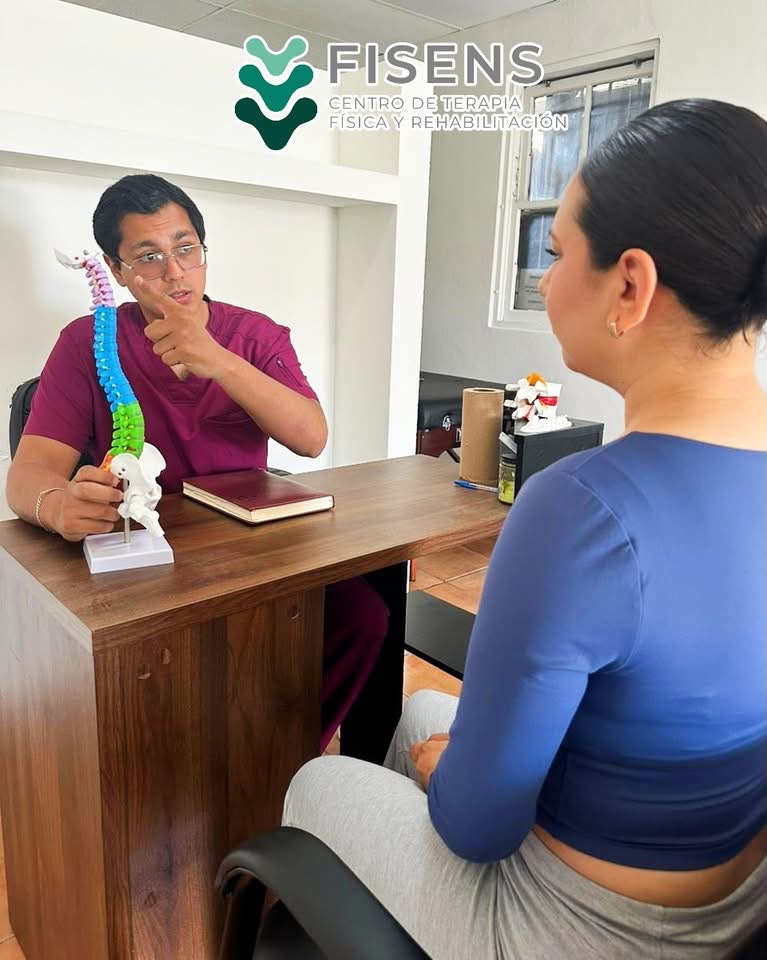
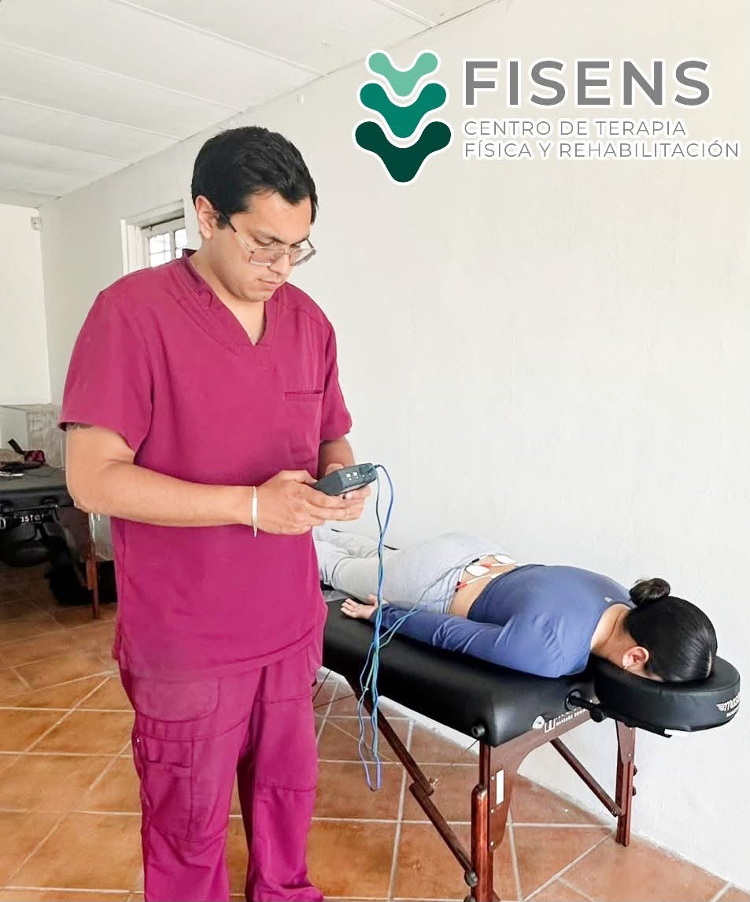

Fisioterapia profesional
Atención personalizada para que vuelvas a moverte sin dolor y con plena confianza en tu cuerpo.


Sobre mí
Soy Carlos Chacón, fisioterapeuta certificado y fundador de Fisens, con más de 8 años de experiencia en rehabilitación física y terapia manual. Mi enfoque es integral: trato la causa del dolor, no solo el síntoma.
Cuento con especialización en fisioterapia deportiva, neurológica y ortopédica, ofreciendo planes de tratamiento personalizados para cada paciente.
Servicios
Tratamientos especializados y personalizados para cada condición, utilizando las técnicas más actuales y efectivas.
¿Por qué elegirnos?
Cada plan de tratamiento es diseñado específicamente para ti y tus objetivos.
Adaptamos los horarios a tu rutina para que el tratamiento sea compatible con tu vida.
Formación continua para ofrecerte siempre las técnicas más eficaces y seguras.
Te acompañamos durante todo el proceso, monitoreando tu progreso en cada sesión.
Contacto